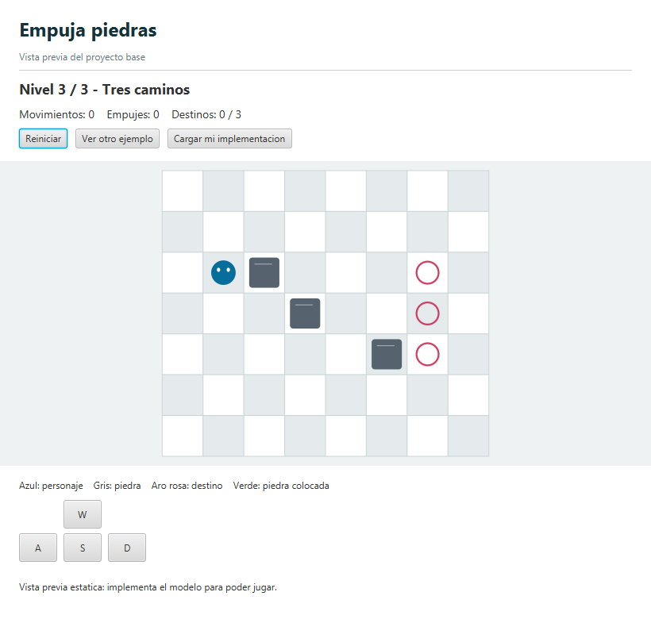

UT 04. Ejercicios
Programación Orientada a Objetos (POO)
4.1 Modularización: combate de personajes
En esta actividad aprenderás a modularizar código. Partiremos de una clase Codigo1 que contiene todo en un único método y varios atributos, y la tarea será reorganizarla en clases y métodos coherentes con nombres claros y responsables.
Código base a modularizar
Esta es la clase que vamos a usar como punto de partida:
public class Codigo1 {
public String nombre1;
public int vida1;
public int ataque1;
public int defensa1;
public String nombre2;
public int vida2;
public int ataque2;
public int defensa2;
public void blablabla() {
nombre1 = "R2D2";
vida1 = 100;
ataque1 = (int) (Math.random() * 10) + 5;
defensa1 = (int) (Math.random() * 10) + 5;
nombre2 = "C3P0";
vida2 = 100;
ataque2 = (int) (Math.random() * 10) + 5;
defensa2 = (int) (Math.random() * 10) + 5;
System.out.println("Comienza el combate");
while(vida1>0 && vida2>0) {
System.out.println("Recalculando stats");
ataque1 = (int) (Math.random() * 10) + 5;
defensa1 = (int) (Math.random() * 10) + 5;
ataque2 = (int) (Math.random() * 10) + 5;
defensa2 = (int) (Math.random() * 10) + 5;
String s = "Los stats de " + nombre1 + " son:";
s += "\n\tvida: " + vida1;
s += "\n\tataque: " + ataque1;
s += "\n\tdefensa: " + defensa1;
System.out.println(s);
s = "Los stats de " + nombre2 + " son:";
s += "\n\tvida: " + vida2;
s += "\n\tataque: " + ataque2;
s += "\n\tdefensa: " + defensa2;
System.out.println(s);
if (ataque1 > defensa2) {
vida2 = vida2 - (ataque1 - defensa2);
if (vida2 <= 0) {
vida2 = 0;
System.out.println("GRRR..." + nombre2 + " PERDER COMBATE...BSSSS");
}
}
if (ataque2 > defensa1) {
vida1 = vida1 - (ataque2 - defensa1);
if (vida1 <= 0) {
vida1 = 0;
System.out.println("GRRR..." + nombre1 + " PERDER COMBATE...BSSSS");
}
}
}
if(vida1 > vida2){
System.out.println(nombre1+" se alza con la victoria");
} else if (vida1 < vida2) {
System.out.println(nombre2+" se alza con la victoria");
} else {
System.out.println("Ha sido un combate con empate");
}
}
}
Como puedes ver, todo está en una única clase y un único método. Esto dificulta la lectura, el mantenimiento y la reutilización del código.
Objetivo de la modularización
La tarea consiste en:
- Crear una clase
XXX(elegir un nombre coherente) que represente a cada personaje del combate. - Crear métodos dentro de la clase para acciones concretas, por ejemplo:
decirEdad(),cantar(int tiempo), etc. - Recordad, dividir el código en métodos pequeños y significativos para que cada parte tenga una única responsabilidad.
- Elegir nombres claros y descriptivos para clases y métodos.
4.2 Modularización: carrera de coches
Vamos a seguir modularizando código. Volvéis a tener una clase, ahora se llama Codigo2, que contiene todo en un único método y varios atributos. Recordad, la tarea será reorganizarla en clases y métodos coherentes con nombres claros y responsables.
Código base a modularizar
Esta es la clase que vamos a usar como punto de partida:
public class Codigo2 {
public String coche1;
public int velocidad1;
public int distancia1;
public String coche2;
public int velocidad2;
public int distancia2;
public void blablabla() {
coche1 = "Rayo";
distancia1 = 0;
coche2 = "Trueno";
distancia2 = 0;
for (int i = 0; i < 10; i++) {
velocidad1 = (int)(Math.random() * 20) + 5;
velocidad2 = (int)(Math.random() * 20) + 5;
distancia1 += velocidad1;
distancia2 += velocidad2;
System.out.println(coche1 + " avanza " + velocidad1 + " metros. Total: " + distancia1);
System.out.println(coche2 + " avanza " + velocidad2 + " metros. Total: " + distancia2);
}
if (distancia1 > distancia2) {
System.out.println(coche1 + " gana la carrera!");
} else if (distancia2 > distancia1) {
System.out.println(coche2 + " gana la carrera!");
} else {
System.out.println("Empate en la carrera!");
}
}
}
4.3 Modularización: combate por turnos
Si, vamos a darle una vuelta a esto de modularizar código. Ahora tenéis una clase Codigo3. ¡Esta vez tiene más miga, leer los comentarios! Recordad, la tarea será reorganizarla en clases y métodos coherentes con nombres claros y responsables.
Código base a modularizar
Esta es la clase que vamos a usar como punto de partida:
public class Codigo3 {
public int h1; // vida jugador1
public int h2; // vida jugador2
public int m1; // mana jugador1
public int m2; // mana jugador2
public int e1; // vida enemigo1
public int e2; // vida enemigo2
public int em1; // mana enemigo1
public int em2; // mana enemigo2
public void blablabla() {
h1 = 100; m1 = 50;
h2 = 100; m2 = 50;
e1 = 80; em1 = 40;
e2 = 80; em2 = 40;
java.util.Random rnd = new java.util.Random();
int turno = 1; // 1 = jugador1, 2 = jugador2
for (int i = 0; i < 20; i++) {
System.out.println("=== Nuevo turno ===");
if (turno == 1 && h1 > 0) {
System.out.println("Jugador 1: vida " + h1 + ", mana " + m1);
int op = (int) (Math.random()*3)+1;
int dmg = 5, cost = 0;
if (op == 1) { dmg = 15; cost = 10; }
if (op == 2) { dmg = 25; cost = 15; }
if (op == 3) { dmg = 40; cost = 20; }
if (m1 >= cost) {
m1 -= cost;
if (e1 > 0) e1 -= dmg;
else e2 -= dmg;
System.out.println("Jugador1 hace " + dmg + " daño");
} else {
System.out.println("No tienes mana suficiente!");
}
turno = 2;
} else if (turno == 2 && h2 > 0) {
System.out.println("Jugador 2: vida " + h2 + ", mana " + m2);
int op = (int) (Math.random()*3)+1;
int dmg = 5, cost = 0;
if (op == 1) { dmg = 15; cost = 10; }
if (op == 2) { dmg = 25; cost = 15; }
if (op == 3) { dmg = 40; cost = 20; }
if (m2 >= cost) {
m2 -= cost;
if (e1 > 0) e1 -= dmg;
else e2 -= dmg;
System.out.println("Jugador2 hace " + dmg + " daño");
} else {
System.out.println("No tienes mana suficiente!");
}
turno = 3;
} else {
if (e1 > 0) {
int op = (int) (Math.random()*3)+1;
int dmg = 5, cost = 0;
if (op == 1) { dmg = 10; cost = 5; }
if (op == 2) { dmg = 20; cost = 10; }
if (op == 3) { dmg = 30; cost = 15; }
if (em1 >= cost) {
em1 -= cost;
if (h1 > 0) h1 -= dmg;
else h2 -= dmg;
System.out.println("Enemigo1 hace " + dmg + " daño");
} else {
System.out.println("Enemigo1 no tiene mana suficiente");
}
}
if (e2 > 0) {
int op = (int) (Math.random()*3)+1;
int dmg = 5, cost = 0;
if (op == 1) { dmg = 10; cost = 5; }
if (op == 2) { dmg = 20; cost = 10; }
if (op == 3) { dmg = 30; cost = 15; }
if (em2 >= cost) {
em2 -= cost;
if (h1 > 0) h1 -= dmg;
else h2 -= dmg;
System.out.println("Enemigo2 hace " + dmg + " daño");
} else {
System.out.println("Enemigo2 no tiene mana suficiente");
}
}
turno = 1;
}
System.out.println("Estado -> J1: " + h1 + "/" + m1 + ", J2: " + h2 + "/" + m2 +
" | E1: " + e1 + "/" + em1 + ", E2: " + e2 + "/" + em2);
}
if (h1 > 0 || h2 > 0) System.out.println("¡Los jugadores han ganado!");
else System.out.println("¡Los enemigos han ganado!");
}
}
4.4 Completar los TODO de Biblioteca
En esta actividad vas a practicar la programación orientada a objetos de manera inversa: no podrás crear nuevas clases ni métodos. Tu tarea será implementar la funcionalidad dentro de los métodos ya existentes de la clase Biblioteca utilizando únicamente los atributos y métodos que se proporcionan.
Código base
Esta es la clase que se te proporciona, con los métodos donde tendrás que escribir tu código:
public class Biblioteca {
public int librosDisponibles;
public int librosPrestados;
public int visitantes;
public Biblioteca() {
// TODO 01: Inicializar librosDisponibles con el valor facilitado
// y librosPrestados y visitantes a 0
}
public boolean prestarLibro() {
// TODO 02: Comprobar si hay libros disponibles
// Si hay, disminuir librosDisponibles y aumentar librosPrestados
return false;
}
public void devolverLibro() {
// TODO 03: Si los hay, disminuir librosPrestados y aumentar librosDisponibles
}
public void recibirVisitante() {
// TODO 04: Aumentar contador de visitantes
// Posiblemente prestar un libro (un 15% de los visitantes suelen llevarse un libro)
}
public void mostrarEstado() {
// TODO 05: Mostrar libros disponibles, prestados y visitantes
}
public void simularDia() {
// TODO 06: Bucle de varias horas (iteraciones) donde se reciben visitantes,
// se actualizar el estado y se devuelven los libros prestados
}
}El código está preparado con TODOs que marcan el lugar donde debes implementar la lógica.
Objetivo de la actividad
Tu objetivo principal es:
- Escribir código dentro de los métodos ya existentes siguiendo las indicaciones de los TODOs.
- Gestionar correctamente los atributos
librosDisponibles,librosPrestadosyvisitantes. - Simular un día de funcionamiento de la biblioteca utilizando el método
simularDia(). - Mostrar el estado de la biblioteca en cada momento para comprobar que todo funciona correctamente.
Recuerda: no puedes añadir nuevos métodos ni clases, toda la lógica debe ir dentro de los métodos existentes.
4.5 Diseña una clase con TODO
En esta actividad vamos a trabajar el diseño de clases y la comprensión del código ajeno. Esta vez tú serás la persona que diseña una clase con TODOs, y otro/a compañero/a será quien tenga que completarla. De esta forma practicarás cómo estructurar código, dar instrucciones claras y trabajar en equipo sobre el mismo diseño.
Instrucciones de la actividad
- Crea una clase Java original (por ejemplo:
CuentaBancaria,Robot,Juego,Inventario, etc.). - Tu clase deberá contener al menos 3 atributos y 5 métodos (no de olvides del constructor).
- En lugar de implementar el código de los métodos, escribe comentarios con
// TODO:explicando claramente qué debe hacer cada método. - Las explicaciones deben ser claras y concisas, de modo que otra persona pueda completar el código sin dificultad, pero sin que le des la solución exacta.
- No se permite el uso de IA: esta actividad busca fomentar el pensamiento lógico y la capacidad de planificación. Si lo hace una máquina por nosotros, no aprendemos.
Cuando termines tu clase, compártela con un/a compañero/a de clase. Esa persona deberá completar los métodos según tus indicaciones.
Fases del trabajo colaborativo
- Diseño: Crea tu clase con los TODOs siguiendo los requisitos.
- Intercambio: Envía tu clase a un/a compañero/a (o el profesor asignará parejas).
- Implementación: Completa la clase que te ha tocado rellenando los TODOs.
- Revisión: Devuelve la clase a su autor/a original para que revise si cumple con la intención del diseño.
Requisitos mínimos
- La clase debe tener un mínimo de 3 atributos.
- Debe incluir al menos 5 métodos y 1 constructor.
- Los nombres de los atributos y métodos deben ser coherentes y seguir buenas prácticas (camelCase, nombres descriptivos, etc.).
- Las instrucciones de los TODO deben ser comprensibles, pero no una guía paso a paso con código exacto.
- No está permitido usar herramientas de IA para generar los TODOs. Esta actividad es de diseño y pensamiento propio.
💡 Pista: si te cuesta pensar los TODOs desde cero, crea primero una versión funcional de tu clase, pruébala y, cuando funcione, elimina el código de los métodos sustituyéndolo por comentarios TODO que indiquen lo que hacía cada parte.
4.6 Clase de utilidades: GeneradorPalabras
En esta actividad, vamos a dar nuestros primeros pasos en la creación de una clase de utilidades, similar a cómo hemos estado utilizando la clase Math en nuestros proyectos. La idea es que aprendáis a crear métodos y constantes estáticas, para que puedan ser invocadas sin necesidad de instanciar la clase.
Estructura del Proyecto
- El proyecto deberá estar contenido dentro del paquete:
edu.masanz.da.ut4. - Crearéis una clase llamada
GeneradorPalabras, que estará alojada en un subpaquete denominadoutil, es decir:edu.masanz.da.ut4.util. - Esta clase
GeneradorPalabrasincluirá una constante y un método estático, que podréis invocar directamente desde la claseMain.
Requisitos de la Clase GeneradorPalabras
- Constante estática: Crear una constante llamada
PALABRASque contenga unStringcon muchas palabras de la misma longitud, separadas por espacios. Por ejemplo:"gato vaca rana leon osos". - Método estático: Incluir un método llamado
obtenerPalabra(), que devuelva una palabra aleatoria de la constantePALABRAS. Para seleccionar la palabra, utilizaréis métodos del objetoStringcomocharAt,lengthysubstring. Ten en cuenta que no conocemos ni el número de letras que compone cada palabra ni el número de palabras que hay en la constante.
Uso de la Clase GeneradorPalabras
En la clase Main, invocaréis al método obtenerPalabra() de la clase GeneradorPalabras para mostrar una palabra aleatoria en pantalla. La clave aquí es que, al ser un método estático, no necesitaréis instanciar la clase GeneradorPalabras para invocarlo, de la misma forma que utilizáis Math.random() sin crear un objeto de tipo Math.
Nombre del proyecto del ejercicio: UT4Ejer06PalabrasRandom
Reto adicional:
¿Qué pasaría si el tamaño de las palabras es variable? ¿Cómo resolveríamos el problema para una constante PALABRAS que contenga por ejemplo los valores "camion oro azul camarero"?
4.7 Colores para la consola
En esta actividad, crearéis otra clase de utilidad llamada ColoresConsola. Esta clase os permitirá cambiar el color del texto que se muestra en la consola. Utilizaremos códigos de escape ANSI para modificar el color de la salida, lo que hará que vuestros programas sean más dinámicos y visualmente atractivos.
Estructura del Proyecto
- El proyecto estará contenido en el paquete:
edu.masanz.da.ut4.util. - Crearéis una clase llamada
ColoresConsola, que contendrá constantes y métodos estáticos para cambiar el color del texto en consola.
Constantes para los Colores
En la clase ColoresConsola, deberéis definir las siguientes constantes para cambiar el color del texto:
public static final String RESET = "\u001B[0m";
public static final String ROJO = "\u001B[31m";
public static final String VERDE = "\u001B[32m";
public static final String AMARILLO = "\u001B[33m";
public static final String AZUL = "\u001B[34m";
public static final String MAGENTA = "\u001B[35m";
public static final String CIAN = "\u001B[36m";
public static final String BLANCO = "\u001B[37m";
Estas constantes representan los colores que podréis utilizar para modificar la salida de texto en la consola. La constante RESET se utiliza para volver al color predeterminado.
Métodos Estáticos
La clase ColoresConsola también deberá incluir métodos estáticos que permitan mostrar texto en la consola con los colores definidos. Algunos ejemplos de métodos que podríais implementar:
imprimirEnRojo(String texto): Muestra el texto en color rojo.imprimirEnVerde(String texto): Muestra el texto en color verde.imprimirEnAmarillo(String texto): Muestra el texto en color amarillo.imprimirEnAzul(String texto): Muestra el texto en color azul.- Cada método debe utilizar la constante de color correspondiente, seguido de
RESETpara volver al color predeterminado.
Ejemplo de Uso
En la clase Main, podréis probar la clase ColoresConsola invocando los métodos de colores sin necesidad de crear una instancia. Por ejemplo:
ColoresConsola.imprimirEnRojo("Este es un mensaje en rojo");
ColoresConsola.imprimirEnVerde("Este es un mensaje en verde");
Notaréis cómo cambia el color de la salida en la consola, haciendo el texto más visual y llamativo.
Desafío Adicional
- Añadid métodos adicionales para otros colores o incluso combinaciones de colores.
- Intentad crear un método que permita cambiar el color de cualquier texto pasado como parámetro, sin necesidad de definir un método específico para cada color.
Nombre del proyecto del ejercicio: UT4Ejer07PinkPower
4.8 Wordle por consola
¡Ha llegado el momento de poner a prueba todo lo que habéis aprendido hasta ahora! En esta actividad, desarrollaremos un juego de Wordle en consola, utilizando las clases de utilidad que creasteis anteriormente: GeneradorPalabras y ColoresConsola.
Estructura del Proyecto
- El proyecto estará contenido en el paquete:
edu.masanz.da.ut4.wordle. - Crearéis una nueva clase llamada
Wordle, que será la clase principal del juego. - La clase
GeneradorPalabrasserá utilizada para obtener la palabra del día. - La clase
ColoresConsolapermitirá cambiar los colores de salida en la consola. - Deberás crear cada clase en el paquete que consideres oportuno.
Requisitos
La clase Wordle deberá cumplir los siguientes requisitos:
- Tendrá dos constructores. Uno que reciba la palabra del día a evaluar y otro sin parámetros, en cuyo caso deberá generar la palabra del día a evaluar a través del método estático
obtenerPalabra()de la claseGeneradorPalabras. - Implementará un método
evaluarPalabra(String palabraUsuario)que reciba la palabra introducida por el usuario y muestre un resultado formateado con colores según las siguientes reglas:- Si la letra no está en la palabra del día, se mostrará la letra en color rojo.
- Si la letra está en la palabra del día, pero no en la posición correcta, se mostrará la letra en color amarillo.
- Si la letra está en la posición correcta, se mostrará la letra en color verde.
Ejemplo de Salida
Imaginad que la palabra del día es PERRO. Si el usuario introduce la palabra PARTE, el método evaluarPalabra debería devolver algo similar a:
PARTE
En este ejemplo:
Pes correcta y está en la posición correcta (color verde).Aestá en la palabra del día, pero en una posición incorrecta (color amarillo).R,TyEno están en la palabra del día (color rojo).
Pistas y Consejos
- Recordad utilizar los métodos
charAt,lengthysubstringde la claseStringpara recorrer y comparar las letras de la palabra del día. - Utilizad las constantes de color definidas en
ColoresConsolapara mostrar el resultado con los colores adecuados. - Intentad hacer que el juego sea intuitivo y que el usuario pueda probar varias palabras hasta adivinar la palabra del día.
- ¡Únicamente habrá 6 intentos para adivinar la palabra!
Nombre del proyecto del ejercicio: UT4Ejer08WordleConsola
4.9 Tabla de puntuaciones
En esta actividad, vamos a seguir practicando con cadenas de texto y colores en consola. Además, utilizaremos el método printf para alinear el texto y mostrar una tabla de puntuaciones de forma elegante.
Descripción del Proyecto
Vais a desarrollar un programa que muestre puntuaciones generadas aleatoriamente (valores entre 0 y 200) y nombres asignados a dichas puntuaciones introducidos por el usuario con la clase Scanner. Es decir, se introducirá un nombre y se generará una puntuación aleatoria asignada a dicho nombre. Cuando el usuario introduzca una palabra vacía el programa dejará de solicitar más nombres y mostrará una tabla con tres columnas: Jugador, Puntuación y Rango. El rango estará coloreado según la puntuación del jugador:
- Puntuación menor a 50: color
ROJO. - Puntuación entre 50 y 100: color
AMARILLO. - Puntuación mayor a 100: color
VERDE.
Ejemplo de Salida
------------------------------------------------
| Jugador | Puntuación | Rango |
------------------------------------------------
| Alice | 120 | VERDE |
| Bob | 45 | ROJO |
| Charlie | 75 | AMARILLO |
| David | 200 | VERDE |
------------------------------------------------
En este ejemplo:
- La columna de Jugador está alineada a la izquierda.
- La columna de Puntuación está alineada a la derecha.
- La columna de Rango muestra el color correspondiente usando las constantes de la clase
ColoresConsola.
Requisitos
- Utilizad la clase
ColoresConsolacreada anteriormente para aplicar colores en la columna de rango. - Debéis formatear la tabla utilizando
printfpara asegurar que las columnas estén alineadas correctamente. - Al menos tres jugadores con puntuaciones diferentes.
- El texto debe quedar formateado de manera limpia y legible.
Pistas
- Utilizad
%spara formatear cadenas de texto,%dpara números enteros y%npara saltos de línea. - Podéis alinear texto a la izquierda usando
%-20sy a la derecha con%20s(por ejemplo).
Nombre del proyecto del ejercicio: UT4Ejer09TablaClasificacion
4.10 Juego del ahorcado: toma de requisitos
En esta actividad, vais a diseñar e implementar vuestra propia versión del clásico juego del Ahorcado. El reto es que debéis pensar por vosotros mismos las clases, métodos y atributos necesarios para llevar a cabo la solución. ¡Vamos allá!
Toma de Requisitos
Un cliente ha venido a vosotros con la siguiente propuesta:
"Quiero desarrollar un juego del Ahorcado donde el usuario pueda adivinar palabras. El juego debe permitir al jugador introducir letras una a una y mostrar el progreso de la palabra oculta, actualizando el estado del juego según los intentos fallidos. Además, me gustaría que el jugador pueda ver un contador de los intentos restantes y que el juego termine cuando acierte toda la palabra o agote sus intentos."
Requisitos del Juego
- El juego debe seleccionar una palabra de manera aleatoria (podéis reutilizar la clase
GeneradorPalabrascreada anteriormente). - El jugador debe poder introducir letras una a una para intentar adivinar la palabra oculta.
- Debe mostrar el estado actual de la palabra (por ejemplo, "_ _ a _ _ a").
- El jugador tiene un número limitado de intentos (por defecto 6). Con cada intento fallido, se debe actualizar un contador de intentos restantes.
- Deberán mostrarse mensajes con diferentes colores. Qué colores y cuando utilizarlos dependerá de vuestra decisión.
- Del mismo modo, los textos que se muestren, deberán estar alineados correctamente, bajo vuestro criterio.
- El juego termina cuando el jugador acierta toda la palabra o agota sus intentos.
- Debéis mostrar un mensaje final indicando si el jugador ha ganado o perdido.
¿Cómo lo Vamos a Hacer?
A diferencia de los ejercicios anteriores, esta vez no os vamos a dar los atributos, métodos o clases que debéis utilizar. En su lugar, os dejamos algunas preguntas para ayudaros a pensar y estructurar vuestra aplicación:
- ¿Qué clases necesitará el juego? ¿Podríais tener una clase para manejar el estado del juego?
- ¿Qué métodos necesitará la clase principal? ¿Tal vez un método para evaluar cada intento?
- ¿Qué atributos necesitaréis? ¿Una lista de letras acertadas? ¿Un contador de intentos?
- ¿Cómo vais a manejar la visualización del estado del juego en la consola?
- ¿Qué partes del código pueden beneficiarse de ser métodos estáticos o reutilizables?
Nombre del proyecto del ejercicio: UT4Ejer10AhorcadoConsola
4.11 Objetos como parámetros: ciudadano y ladrón
En esta actividad aprenderás cómo funciona el paso de objetos por referencia en Java. Verás cómo, al pasar un objeto como parámetro a un método, este puede modificar sus atributos directamente, afectando al objeto original fuera del método.
Contexto de la práctica
Vamos a simular una pequeña historia entre dos clases:
Ciudadano: una persona con un nombre y una cantidad de dinero.Ladron: un personaje que puede robar dinero a un ciudadano mediante un métodorobar(Ciudadano c).
Además, el ciudadano podrá sacar dinero de un cajero con el método sacarDinero(), y cada clase tendrá su propio toString() para mostrar información formateada sobre su estado.
Estructura del ejercicio
Se deberá trabajar con tres clases principales:
Ciudadano→ atributos: nombre, dinero.
Métodos:sacarDinero(),toString().Ladron→ atributos: nombre, dinero robado.
Métodos:robar(Ciudadano c),toString().Main→ para crear los objetos, invocar los métodos y mostrar resultados.
Observa cómo el método robar(Ciudadano c) modifica directamente el objeto c que se le pasa como parámetro. Esto demuestra que los objetos en Java se pasan por referencia (en realidad, por valor de referencia), por lo que los cambios internos afectan al mismo objeto.
Uso de colores y salida formateada
Para mejorar la visualización, emplea la clase auxiliar que desarrollamos en su día ColoresConsola para dar color al texto. Por ejemplo:
De este modo la salida será más elegante y clara visualmente.
Tareas a realizar
- Implementar las clases
CiudadanoyLadroncon los métodos descritos. - Demostrar en el
maincómo el ladrón modifica el dinero del ciudadano al robarle. - Usar
printfpara mostrar información formateada y colorida. Por ejemplo, sacar la información deCiudadanoyLadronen modo tabla con alineación de textos y colores diferenciados. - Incluir el método
toString()en ambas clases para mostrar información general de cada objeto.
💡 Consejo: imprime el estado de los objetos antes y después de llamar al método robar() para visualizar claramente el efecto del paso por referencia. También tenemos Java Visualizer para observar que está pasando en modo debug.
Nombre del proyecto del ejercicio: UT4CiudadanoLadron
4.12 Ampliación: ciudadano, ladrón y guardia
En esta ampliación trabajaremos con tres objetos que interactúan entre sí: un Ciudadano, un Ladrón y un Guardia. El objetivo es consolidar el concepto de paso de objetos por referencia, y comprender cómo las modificaciones de estado entre objetos afectan a todo el sistema.
Escenario de la simulación
Imagina una pequeña ciudad donde:
- El Ciudadano tiene un nombre y una cantidad de dinero, que puede aumentar al sacar dinero o disminuir si le roban.
- El Ladrón puede robar a un ciudadano mediante el método
robar(Ciudadano c). - El Guardia patrulla la zona y puede intervenir para proteger al ciudadano o intentar atrapar al ladrón con el método
intervenir(Ladron l, Ciudadano c).
Cada acción modificará el estado de los objetos, y deberás mostrarlo claramente en consola con printf y colores personalizados.
Estructura recomendada
Las clases mínimas que deberías tener son:
Ciudadano→ nombre, dineroLadron→ nombre, botín total, éxito en robosGuardia→ nombre, arrestos realizadosColoresConsola→ constantes con colores ANSIMain→ simulación de la aplicación
Observa cómo un mismo objeto (Ciudadano) es modificado por dos objetos distintos en diferentes momentos del programa, reforzando el concepto de referencia compartida.
Tareas a realizar
- Implementar las clases
Ciudadano,LadronyGuardiacon métodos y atributos coherentes. - Simular varias interacciones donde el ladrón roba y el guardia puede intervenir.
- Demostrar claramente el paso de objetos por referencia (ver cómo se modifican los objetos desde distintos métodos).
- Usar
printfyColoresConsolapara mostrar la información de manera legible y atractiva. - Incluir mensajes de estado antes, durante y después de las acciones para comparar los cambios.
💡 Consejo: Intenta modularizar el código creando métodos auxiliares como mostrarEstadoGeneral() o simularDia() para mantener un código limpio y reutilizable.
Retos opcionales
- Que el ciudadano pueda denunciar el robo (porcentaje de éxito de intervención del guardia).
- Que el ladrón pueda huir y acumular robos pendientes.
- Añadir varios objetos de tipo
Ciudadanoen la iteración.
Estos extras ayudan a trabajar la relación entre múltiples objetos y la composición de clases.
Nombre del proyecto del ejercicio: UT4CiudadanoLadronGuardia
4.13 Objetos dentro de objetos: pesca en el océano
En esta práctica trabajarás con un escenario donde un Pescador interactúa con un Océano que contiene varios Peces. Aprenderás cómo un objeto puede tener otros objetos como atributos, cómo se gestionan las referencias entre ellos y qué ocurre cuando un objeto “desaparece” (se vuelve null).
Escenario de la simulación
Imaginemos un océano que tiene tres peces. Cada pez tiene un nombre y un nivel de dificultad (un número aleatorio del 1 al 10 que representa lo difícil que es pescarlo).
- El Pescador puede intentar pescar con el método
pescar(Oceano o). - Por cada pez del océano, el pescador lanzará un número aleatorio. Si su número es mayor o igual al nivel de dificultad del pez, consigue pescarlo.
- Cuando un pez es pescado, desaparece del océano (
null) y el contador del pescador aumenta. - Después de cada intento de pesca, el océano intentará regenerarse con una pequeña probabilidad (por ejemplo, del 30%).
Estructura
Deberás trabajar con las siguientes clases:
Pez: representa un pez en el océano.Oceano: contiene tres atributos de tipoPez(pez1, pez2, pez3).Pescador: tiene un contador de peces pescados y un métodopescar(Oceano o).Main: para ejecutar la simulación.
Puedes personalizar nombres, probabilidades o lógica de regeneración. Lo importante es entender cómo un objeto (Oceano) contiene otros objetos y cómo se modifican desde otra clase (Pescador) gracias al paso por referencia.
Tareas a realizar
- Implementar las clases
Pez,OceanoyPescadorsegún la descripción. - Mostrar con
System.out.printfinformación formateada y clara del proceso de pesca. - Demostrar cómo los peces del océano pueden desaparecer (
null) y regenerarse (new) aleatoriamente. - Usar el método
toString()en todas las clases para imprimir el estado del sistema antes y después de cada acción.
Retos opcionales
- Dar distintos valores de “dificultad base” a cada pez según su tipo.
- Hacer que el pescador solo tenga un número limitado de intentos.
- Añadir un método
simularPesca()que realice varios turnos de pesca y regeneración del oceano. - Usar colores en consola con la clase auxiliar
ColoresConsolapara resaltar los eventos.
Nombre del proyecto del ejercicio: UT4PescadorOceano
4.14 Ampliación: pesca sostenible
En esta parte del ejercicio, vamos a ampliar la simulación introduciendo una situación mucho más realista y compleja: varios pescadores que comparten el mismo océano. Además, el Océano no solo contiene peces, sino que también tiene un nuevo atributo: su nivel de contaminación. Este valor influirá directamente en la capacidad del océano para regenerar peces y cada vez que un pescador pesque un pez, modificará este valor.
De esta forma, veremos claramente cómo un mismo objeto compartido puede verse afectado por las acciones de diferentes instancias de otros objetos.
- Crea al menos tres pescadores distintos, cada uno con su propio nombre e historial de pesca.
- Todos ellos deben pescar en el mismo objeto
Oceano. - El océano tendrá un nivel de contaminación entre 0 y 100. La probabilidad de regenerar peces disminuirá según aumente ese valor.
- Después de que cada pescador pesque, el océano debe intentar regenerarse, afectado por su nivel de contaminación.
- El nivel de contaminación será compartido por todos, por lo que las acciones de un pescador afectan al resto.
- El pescador podrá limpiar el océano con un nuevo método
limpiarOceano(Oceano o). Podrá elegir está opción en base a una probabilidad o el criterio que elijáis, pero nunca podrá pescar y limpiar el océano al mismo tiempo.
Por ejemplo, si un pescador es muy activo y contamina mucho, los demás notarán que el océano se regenera con más dificultad. Esto permite observar con claridad el concepto de paso por referencia: todos los pescadores están actuando sobre el mismo objeto en memoria, no sobre copias.
Retos adicionales
- Haz que los pescadores tengan distintos niveles de ética ambiental, de manera que algunos limpien el océano más a menudo que otros.
- Implementa un “ranking sostenible” al final del programa, donde se valore no solo quién pescó más peces, sino quién mantuvo el océano en mejor estado.
- Permite que, si la contaminación llega a niveles extremos, los pescadores tengan que dejar de pescar hasta que se recupere el entorno.
- Simular varios días de pesca, mostrando la evolución del sistema con
printfy colores si lo deseas.
Nombre del proyecto del ejercicio: UT4OceanoSostenible
4.15 Partido de fútbol
En esta actividad vamos a simular un partido de fútbol entre jugadores y porteros, utilizando todo lo aprendido sobre paso por referencia, probabilidad y relaciones entre objetos.
Tendrás que diseñar las clases Jugador y Portero con los métodos y atributos necesarios para que el balón pueda ir pasando de unos a otros, y los eventos (pases, regates y chutes) ocurran según las probabilidades establecidas.
Clases principales
- Jugador: representa a un jugador de campo.
- Portero: representa al guardameta de un equipo.
Ambos interactúan entre sí y con el balón, que estará “dentro” de un objeto en forma de atributo booleano (tieneBalon).
Atributos sugeridos
Para la clase Jugador puedes considerar los siguientes atributos:
String nombre— nombre del jugador.Jugador compi— compañero de equipo al que puede pasar el balón.boolean tieneBalon— indica si el jugador tiene el balón actualmente.int tasaExitoPase— probabilidad (1–100) de completar un pase con éxito.int tasaExitoGol— probabilidad (1–100) de que su chute sea certero y llegue a portería.int tasaInterceptar— probabilidad (1–100) de interceptar un pase o un regate rival.int tasaRegate— probabilidad (1–100) de regatear con éxito a un rival.
Y para la clase Portero:
String nombreboolean tieneBalonint tasaParada— probabilidad (1–100) de detener un disparo.int tasaExitoPase— probabilidad de realizar un pase correcto al iniciar jugada.
Métodos requeridos
Cada clase debe tener los siguientes métodos:
En Jugador:
void regatear(Jugador rival)— el jugador intenta superar al rival.void chutar(Portero porteroRival)— intenta marcar un gol al portero contrario.void pasar(Jugador destino, Jugador rival)— intenta pasar el balón a su compañero evitando la intercepción.String toString()— devuelve una descripción del jugador, su tasa de éxito y si tiene el balón.
En Portero:
void pararBalon()— determina si consigue detener el disparo.void pasar(Jugador destino)— el portero pasa el balón a un jugador de su equipo.String toString()— muestra su tasa de parada y si tiene el balón.
Cada acción debe modificar correctamente el atributo tieneBalon de los jugadores implicados, para reflejar quién controla el balón en cada momento.
Lógica del partido
Se simulará un pequeño partido o secuencia de jugadas:
- Comienza con un jugador que tiene el balón (
tieneBalon = true). - El jugador puede decidir aleatoriamente si regatea, pasa o chuta.
- Los rivales intentan interceptar el balón o detener el disparo, según corresponda.
- Si el balón se pierde, cambia la posesión automáticamente.
Utiliza Math.random() para generar los porcentajes de éxito o fallo. Por ejemplo: if (Math.random() * 100 < tasaExitoPase) ...
Presentación y formato
- Utiliza
printf()para mostrar mensajes de manera formateada, con colores si usas la clase de colores del ejercicio anterior. - Muestra mensajes claros, por ejemplo:
"Juan intenta regatear a Carlos y... ¡Lo consigue!""El portero Paco detiene el disparo de Juan con una gran parada." - Incluye un marcador global (goles Equipo1 vs Equipo2).
Retos adicionales
- Permite que el partido dure varios turnos (por ejemplo, 10 jugadas).
- Agrega una clase
Equipoque contenga varios jugadores y su portero, para simular equipos completos. - Implementa un método
iniciarPartido()que automatice el flujo y declare el equipo ganador al final. - Agrega una estadística final con el número de pases, regates, tiros y goles exitosos.
- Si te sientes valiente, puedes incluir una clase
Arbitroe incluir un sistema de faltas y tarjetas (esto sería una gran ampliación)
Nombre del proyecto del ejercicio: UT4PartidoFutbol
4.16 Proyecto integrador UT1–UT4: EmpujaPiedras
Construye un juego en el que un personaje debe empujar todas las piedras hasta sus destinos. El mismo modelo funcionará desde consola y desde una interfaz JavaFX proporcionada.
Proyecto base
Descarga el proyecto Maven y abre pom.xml con IntelliJ IDEA. Configura JDK 17 y espera a que se descarguen las dependencias. Trabajaremos siempre en UTF-8.
La base incluye las vistas, los lanzadores, los contratos, tres escenarios y pruebas automáticas. Las clases que debes completar contienen avisos TODO. Compila desde el primer momento, pero el juego todavía no está implementado.
Mientras el modelo esté pendiente, aparece una vista previa estática para comprobar el tablero y recorrer sus ejemplos. No permite mover piedras. Al completar el modelo, las mismas vistas se conectarán a tu juego.

Nombre del proyecto del ejercicio: EmpujaPiedras
Objetivos y alcance
- Utilizar variables, constantes, expresiones, conversiones y porcentajes.
- Construir clases con atributos privados, constructores, métodos, parámetros y retornos.
- Comprender referencias compartidas, modificación de objetos y sustitución de referencias.
- Resolver reglas de movimiento con condicionales y recorrer información con bucles.
- Implementar listados simplemente enlazados a partir de interfaces documentadas.
- Separar modelo y presentación para reutilizar las reglas en consola y JavaFX.
- Utilizar excepciones, aserciones, Javadoc, pruebas y depuración.
No utilices arrays, matrices, colecciones de Java ni ficheros para guardar partidas. Solo la interfaz IListado<T> declara un parámetro genérico: implementaremos tres listados y tres nodos concretos. La firma estándar main(String[] args) y los mecanismos internos de JavaFX proporcionados no forman parte de esa restricción.
Reglas del juego
- El tablero tiene dimensiones positivas. Sus casillas son transitables salvo las ocupadas por piedras. Los bordes son límites, no casillas adicionales.
- El personaje se mueve una casilla con W, A, S o D, sin diagonales ni salidas del tablero.
- Si la casilla siguiente no contiene piedra, el personaje puede entrar.
- Si contiene una piedra, solo puede empujarla si la casilla inmediatamente posterior está dentro del tablero y no contiene otra piedra.
- No puede arrastrar piedras ni empujar dos a la vez. Si el intento está bloqueado, no cambia ninguna posición ni contador.
- Los destinos no son obstáculos: pueden estar bajo el personaje o una piedra y no desaparecen al retirarlos.
- Hay la misma cantidad positiva de piedras y destinos. El nivel se resuelve cuando todos los destinos están cubiertos por piedras.
- Una vez resuelto, se bloquean los movimientos. «Siguiente nivel» avanza si quedan niveles; resolver el último completa la partida.
- «Reiniciar» restaura las posiciones iniciales y pone los contadores del nivel a cero, incluso si ya estaba resuelto. No cambia de nivel.
Cada desplazamiento válido suma un movimiento. Si además desplaza una piedra, suma un empuje. Entrar en un destino vacío no cuenta como empuje.
Coordenadas y representación
La esquina superior izquierda es (0, 0). x aumenta hacia la derecha e y hacia abajo. Son válidas 0 ≤ x < anchura y 0 ≤ y < altura.
No necesitas almacenar cada casilla. Para consultar (x, y), compara esas coordenadas con el personaje y recorre los listados. Para dibujar el tablero, las vistas recorren filas y columnas con bucles anidados.
| Símbolo | Significado |
|---|---|
. | Casilla vacía. |
J | Personaje. |
P | Piedra. |
D | Destino vacío. |
* | Piedra sobre destino. |
+ | Personaje sobre destino. |
getCasilla devuelve esos símbolos. JavaFX los dibuja gráficamente y la consola los representa con texto. El modelo no elige colores ni imprime.
Organización del proyecto
El paquete base es edu.masanz.da.ut4. Mantén esta separación:
| Paquete | Responsabilidad | Trabajo |
|---|---|---|
modelo | Personaje, Piedra, Destino, Nivel y Juego. | Implementar constructores, consultas y reglas. |
listados | Tres listados concretos con un contrato común. | Implementar ListadoPiedras, ListadoDestinos y ListadoNiveles a partir de IListado<T> y los tres nodos dados. |
utilidades | Carga de niveles desde texto, código aleatorio y porcentaje decimal. | Implementar sus métodos estáticos. |
api | Contrato Partida utilizado por ambas vistas. | Respetarlo al implementar Juego. |
configuracion | Clase Constantes con los niveles dibujados en un String. | Datos proporcionados; interpretar el texto desde Utilidades. |
app, vista, demo | Lanzadores, vistas y vista previa. | Infraestructura proporcionada. |
Separación obligatoria: modelo y listados no importan JavaFX ni Scanner, no llaman a System.out y no esperan órdenes. Cada llamada procesa una acción y termina; la vista decide cuándo llega la siguiente.
Listados simplemente enlazados
El contrato común es IListado<T>: T representa el tipo de elemento. Implementa tres clases concretas: ListadoPiedras implements IListado<Piedra>, ListadoDestinos implements IListado<Destino> y ListadoNiveles implements IListado<Nivel>.
IListado<Piedra> piedras = new ListadoPiedras();
IListado<Destino> destinos = new ListadoDestinos();
IListado<Nivel> niveles = new ListadoNiveles();Solo la interfaz declara T. Cada listado utiliza su nodo específico proporcionado: NodoPiedra, NodoDestino o NodoNivel. Cada nodo guarda un objeto de su tipo y apunta al siguiente nodo del mismo tipo.
Cada listado mantiene su primer nodo y cantidad. Cada nodo guarda una referencia al objeto y otra al siguiente nodo; el último apunta a null. Un listado vacío no tiene primer nodo.
primero → nodo → nodo → nodo → null
↓ ↓ ↓
objeto objeto objeto| Método | Contrato |
|---|---|
incluir(elemento) | Añade al final la misma referencia. Rechaza null y una referencia ya incluida. |
obtener(indice) | Devuelve la referencia de esa posición. Los índices empiezan en cero. |
eliminar(indice) | Retira y devuelve el objeto, conservando el orden de los demás. |
sustituir(indice, elemento) | Reemplaza una referencia y devuelve la anterior, sin cambiar la cantidad. Rechaza null o una referencia presente en otra posición. |
getCantidad(), estaVacio() | Consultan la cantidad y si no hay elementos. |
vaciar() | Deja la lista vacía, sin modificar los objetos retirados. |
toString() | Representa los elementos en orden o devuelve [] si está vacío. |
Un índice inexistente debe provocar IndexOutOfBoundsException, no un acceso accidental a null. Los errores no deben alterar el listado. Sustituir un elemento por su misma referencia es válido.
Editar no es sustituir: cambiar las coordenadas de una piedra obtenida modifica el mismo objeto del listado. sustituir cambia qué objeto ocupa una posición. Dos objetos distintos con iguales datos no son una referencia duplicada; las colisiones de coordenadas las comprueba el nivel.
Clases del modelo
- Personaje: coordenadas actuales y coordenadas iniciales inmutables; consultas, cambio de posición, reinicio y descripción. Rechaza coordenadas negativas.
- Piedra: posición y reinicio de un bloque. No conoce a la siguiente piedra: ese enlace está en el nodo.
- Destino: coordenadas inmutables y descripción. Su ocupación se calcula consultando posiciones; no necesita guardar otro estado que pueda quedar desactualizado.
- Nivel: título, dimensiones, personaje, listados y contadores. Valida la configuración, busca elementos, consulta casillas, realiza movimientos, reinicia y comprueba la victoria.
- Juego: listado de niveles, índice actual y mensaje de resultado. Implementa Partida, traduce direcciones y coordina la progresión.
Los atributos serán privados. Ofrece operaciones que respeten las reglas, no setters para todo. Puedes añadir miembros privados, pero conserva las firmas públicas y sus contratos Javadoc.
Antes de un empuje, comprueba todo el movimiento. No muevas primero al personaje para descubrir después que la piedra estaba bloqueada.
Reiniciar debe restaurar coordenadas guardadas como valores. Tener dos referencias a la misma piedra no crea una copia de su estado anterior.
Tres niveles iniciales
Constantes.NIVELES contiene un String con los tres escenarios. La primera línea de cada bloque es su título; después aparecen las filas del tablero. Una línea --- separa niveles. En los escenarios dados, el personaje comienza en (1, 2), pero la carga debe deducirlo del símbolo, no asumirlo.
public class Constantes {
public static final String NIVELES =
"Primer empuje\n"
+ "......\n"
+ "......\n"
+ ".JP.D.\n"
+ "......\n"
+ "......\n";
}Este fragmento muestra solo el primer escenario; la clase del proyecto contiene los tres. Cambiar los dibujos debe bastar para cambiar los niveles, sin reescribir coordenadas en Java.
Implementa Utilidades.cargarNiveles(), que carga la constante, y Utilidades.cargarNiveles(String texto), que interpreta cualquier texto con ese formato y devuelve IListado<Nivel>. Utiliza indexOf, substring, charAt y bucles, sin split, arrays ni colecciones.
- Separa cada bloque y extrae el título.
- Deduce la anchura por los caracteres de una fila y la altura por el número de filas. Todas deben medir lo mismo.
- Localiza el único personaje y crea el nivel. Crea piedras y destinos según los símbolos y añádelos a sus listados.
*crea piedra y destino;+, personaje y destino. - Valida el nivel e inclúyelo en el listado. Cada carga debe construir objetos nuevos.
Admite saltos de línea LF y CRLF, con o sin salto final. Rechaza títulos o niveles vacíos, filas desiguales, símbolos desconocidos, personajes ausentes o repetidos y cantidades de piedras y destinos distintas o no positivas. No debe haber separador antes del primer nivel ni después del último.
Estos son los datos que se obtienen al interpretar el texto proporcionado. Las posiciones se expresan como (x, y).
| Nivel | Dimensiones | Piedras | Destinos |
|---|---|---|---|
| 1. Primer empuje | 6 × 5 | (2, 2) | (4, 2) |
| 2. Dos entregas | 7 × 6 | (2, 2), (4, 3) | (5, 2), (5, 3) |
| 3. Tres caminos | 8 × 7 | (2, 2), (3, 3), (5, 4) | (6, 2), (6, 3), (6, 4) |
Los niveles son resolubles e independientes. Reiniciar uno no altera los demás. El número mostrado empieza en uno; los índices del listado empiezan en cero.
Editar y añadir niveles
Abre src/main/java/edu/masanz/da/ut4/configuracion/Constantes.java y modifica el texto de NIVELES. No necesitas crear otra clase ni escribir coordenadas en el código.
- Editar: cambia el título o sustituye los símbolos de las filas para mover el personaje, las piedras y los destinos. Utiliza puntos para las casillas vacías, no espacios.
- Cambiar dimensiones: añade o elimina caracteres en todas las filas para cambiar la anchura; añade o elimina filas para cambiar la altura. El tablero debe seguir siendo rectangular.
- Añadir: al final del último tablero, añade una línea
---, el título nuevo y sus filas. Conserva\nal final de cada línea del String y deja el punto y coma únicamente al final de toda la constante. - Reordenar: cambia el orden de los bloques completos. Ese será el orden de juego; no hay que asignarles un número manualmente.
Por ejemplo, para añadir un cuarto nivel, retira el punto y coma de la última línea actual y continúa la concatenación con este bloque:
+ "---\n"
+ "Mi nuevo nivel\n"
+ "......\n"
+ ".JP.D.\n"
+ "......\n";Incluye un único personaje (J o +) y la misma cantidad positiva de piedras y destinos. Recuerda que * cuenta como piedra y destino, y + como personaje y destino. No dejes líneas vacías ni un separador después del último tablero.
Guarda los cambios y vuelve a ejecutar MainConsola o MainJavaFX para reconstruir la partida. Con el cargador implementado, la cantidad de niveles y sus dimensiones se deducen del texto. Prueba siempre que el nuevo mapa se pueda resolver: tener un formato válido no garantiza que las piedras puedan llegar a sus destinos.
Static, azar y conversiones
Utilidades.cargarNiveles()convierte los datos deConstantesen objetos.Utilidadeses una clase normal con métodos estáticos, sinfinalni constructor privado.Utilidades.generarCodigo()utiliza Random y devuelve un entero entre 1000 y 9999. Identifica visualmente la partida; no tiene que ser único.Utilidades.calcularPorcentaje(parte, total)devuelve un double entre 0 y 100. Valida que el total sea positivo y que la parte esté entre cero y el total. Evita la división entera.Juego.getPartidasCreadas()consulta un contador estático de construcciones válidas. Reiniciar o avanzar no lo incrementa.- El código se genera una vez por partida: no cambia al dibujar o reiniciar.
- Posiciones, movimientos y nivel actual son datos de instancia: dos partidas no comparten sus tableros.
La consola proporcionada convierte opciones con Integer.parseInt y captura NumberFormatException. Lee y explica ese código: distingue un texto no numérico de un número que queda fuera del menú.
Dos formas de ejecutar
Trabajaremos desde IntelliJ IDEA. El paquete edu.masanz.da.ut4.app contiene dos clases con un método main para elegir cómo ejecutar el mismo juego:
MainConsola: inicia la versión de texto. La entrada y salida aparecen en la ventana de ejecución de IntelliJ.MainJavaFX: abre una ventana gráfica con el tablero, los botones y los controles de teclado.
Abre la clase elegida y pulsa el triángulo verde junto a su método main, o haz clic derecho sobre la clase y selecciona Run. Para depurar, utiliza Debug. Ejecuta MainJavaFX, no AplicacionJavaFX directamente.
Antes de ejecutar, abre el proyecto como Maven mediante su pom.xml, selecciona JDK 17 y espera a que IntelliJ termine de cargar las dependencias. Ambas clases utilizan las dependencias Maven del proyecto; no necesitas copiar bibliotecas JavaFX manualmente.
W, A, S y D son las direcciones; R reinicia y N solicita avanzar. JavaFX ofrece botones. En consola, Q sale y el menú numérico admite 0 salir, 1 reiniciar, 2 avanzar y 3 cargar una partida nueva.
Ambas vistas llaman al contrato Partida. Una misma secuencia de acciones sobre partidas nuevas debe producir las mismas posiciones, contadores y victoria. No copies las reglas en las vistas.
Excepciones, aserciones y pruebas
Utiliza excepciones estándar de Java, sin crear clases de excepción propias: IllegalArgumentException para datos o argumentos no válidos e IndexOutOfBoundsException para índices inexistentes. Un bloqueo normal se comunica con false, no con una excepción.
Los métodos pendientes de la base lanzan UnsupportedOperationException para mostrar un aviso o activar la vista previa. Retira ese aviso al implementar cada método; no lo utilices para errores de datos.
Escribe una clase de comprobaciones propia para provocar y capturar un índice inexistente, comprobar referencias compartidas y probar construcciones rechazadas. No captures todos los errores para continuar como si no ocurriera nada.
Añade al menos dos aserciones sobre invariantes internas: por ejemplo, la relación entre empujes y movimientos o la permanencia del personaje dentro del mapa. No sustituyen validaciones ni deben modificar datos. Actívalas con -ea al depurar.
| Prueba mínima | Resultado esperado |
|---|---|
| Listado vacío; eliminación de primero, intermedio, último y único. | Cantidad, orden y referencias correctos. |
| Índice negativo o igual a la cantidad; inclusión de null. | Excepción adecuada y listado sin cambios. |
| Movimiento contra borde o empuje contra otra piedra. | No cambia ninguna posición ni contador. |
| Entrar y salir de destinos con personaje y piedras. | El destino se conserva y el símbolo es correcto. |
| Reiniciar después de empujar o resolver. | Coordenadas iniciales y contadores cero; victoria recalculada. |
| Avance prematuro y resolución del último nivel. | No se salta un nivel sin resolver ni se consulta fuera de la lista. |
| Dos partidas independientes. | Comparten el contador estático, no el estado del tablero. |
| Un destino de tres cubierto. | Porcentaje decimal, sin división entera. |
Los tests JUnit se ejecutan con .\mvnw.cmd test. Fallarán mientras haya operaciones pendientes. No debes modificarlos para aceptar resultados incorrectos; añade también tus propias comprobaciones.
Hitos recomendados
- Completa las entidades, validaciones y reinicio.
- Implementa los listados y prueba sus contratos.
- Completa utilidades, configuración y consultas del nivel.
- Implementa movimiento libre, empujes y bloqueos.
- Añade reinicio, victoria y progresión mediante Juego.
- Compara consola y JavaFX con las mismas acciones.
- Documenta con Javadoc, depura un empuje y registra tus pruebas.
Entrega y revisión
Entrega el proyecto en ZIP, sin target ni carpetas del IDE, junto con un documento breve de pruebas: estado inicial, acciones, resultado esperado y obtenido. Explica una decisión de encapsulación y un caso de referencias compartidas.
| Aspecto | Peso orientativo |
|---|---|
| Contrato común e implementación de los tres listados. | 25 % |
| Movimiento, empujes, bloqueos y destinos. | 25 % |
| Diseño del modelo, reinicio y progresión. | 20 % |
| Static, utilidades y tratamiento de errores. | 10 % |
| Pruebas, aserciones, documentación y legibilidad. | 15 % |
| Integración con las dos vistas proporcionadas. | 5 % |
La apariencia de JavaFX está proporcionada: se evalúa que tu modelo produzca los mismos resultados desde ambas vistas.